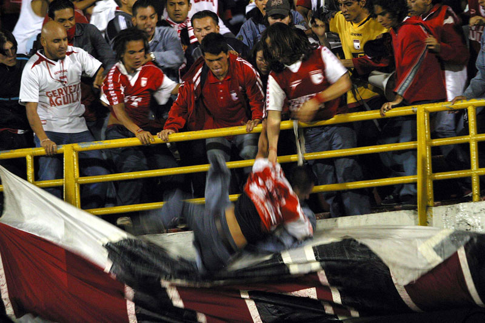

Durante los últimos doce años, 149 personas fueron asesinadas en
el país por llevar la camiseta de un equipo de fútbol. La hinchada del América es la que acumula más muertes.
Una quinta parte de todas las víctimas eran menores de edad. Inventario de una tragedia que no existe en los
conteos policiales.
Los que alientan desde el cielo
Instrucciones
Arrastra con dos dedos para desplazarte por el mapa
Utilizar los dos dedos para ampliar o reducir el mapa
Pasión Mortal
La barra-brava es una droga, dice Luz Élida Fernández. Ella la padeció mucho tiempo en la carne de su sobrino
Andrés Carvajal, desde niño agarrado por la adicción a esa manada que supuestamente palpita con el sueño de
recorrer el mundo detrás de una camiseta. La otra familia. Así la explican. Con la barra se viaja, se come, se
sufre y se alienta. Pero también se sangra. Es un clan. Eso dicen. El pasado 9 de febrero Andrés cayó asesinado
a puñaladas en el barrio Oásis de Comfandi, cuando intentaba llegar a un clásico del fútbol vallecaucano en el
estadio Palmaseca de Palmira. Tenía 27 años y al parecer su pecado capital fue salir vestido de rojo.
Varias horas antes del partido de ese día, la secuencia del crimen captada en el celular de un taxista que lo
presenció desde la carretera, se viralizó como símbolo fatal del futbol colombiano: el escenario de una
confrontación que supera los márgenes de las canchas y se extiende en un sinsentindo que solo encuentra en los
cementerios la frontera final. Las imágenes del video ilustran la forma en que la violencia se ha ido
naturalizando en las calles, con un chico tratando de escapar de las manos que lo perseguían a cuchillo por
pertenecer a otro equipo, mientras el tráfico alrededor transcurría sin alterarse a plena luz. El último soplo
de vida de Andrés Carvajal es la confirmación de la indiferencia generalizada: sobre un carro detenido al que
recuesta la cabeza pidiendo ayuda, el muchacho se desvanece mientras alguien –ya no el taxista- lo sigue
grabando con un teléfono.
Aunque el país presenció la muerte a través de redes sociales y portales de noticias, nada pasó esa vez. No
hubo suspensión de la fecha, ni siquiera minutos de silencio. Cuando el chico cayó al asfalto solo fue otro
número más. La nueva cifra de un inventario en el que pocos se detienen y que ni siquiera existe en los conteos
policiales, como si se tratara de ‘faltas’ para las que no hubo árbitro. Pero lo cierto es que según datos de la
Fiscalía General, de Medicina Legal y registros de medios de comunicación, 149 personas fueron asesinadas
durante los últimos doce años en el país, por el simple hecho de vestir la camiseta de un equipo. Ningún
homicidio ocurrió adentro los estadios. Ninguno en medio de un juego. Sin embargo todos los crímenes, de una u
otra forma, fueron consecuencia del fútbol. Reflejos inequívocos de la pasión mortal que encierra.
Andrés Carvajal era hincha del América. El equipo con mayor número de seguidores asesinados entre 2008 y lo que
va del 2020, con 37 casos. Le siguen Nacional (32), Deportivo Cali (22), Millonarios (15) y Medellín (8). Es un
conteo perverso. Un viaje estremecedor por uno de los senderos de pena que envuelven el deporte con más
fanáticos en Colombia. 149 víctimas es casi el mismo número de plazas que llenaría un articulado del Sistema
Masivo Integrado de Occidente, MÍO (con capacidad total para 160 pasajeros). Un bus de muertos: ese es el
balance que deja la reciente guerra de barras-bravas en el país.

Hinchas del Santa fe se enfrentan entre ellos en
el estadio El Campín. Doce personas han muerto en Colombia en los últimos doce años por riñas entre hinchas
del mismo equipo. Foto: Colprensa
“Es una pena que les haya llegado ese virus. Nosotros convivimos hace muchos años con ese virus, no se puede
erradicar… Se está haciendo lo imposible”, lamentó desde Buenos Aires Miguel Ángel Brindisi, el técnico que en
1997 hizo debutar en Independiente de Avellanada a Alveiro ‘El Palomo’ Usuriaga, delantero caleño acribillado en
el 2004 a media cuadra de su casa, en el barrio doce de Octubre. De acuerdo con un listado de la ONG
‘Salvemosalfútbol.org,’ en Argentina, quizás la nación con el fanatismo más exacerbado del planeta, los
registros de muertes asociadas al deporte cuentan 334 víctimas entre 1922 y 2019. En poco más de una década,
Colombia contó casi la mitad de esos asesinatos.
Le dicen la segunda piel
El 22 de junio del 2013, a Óscar Bayardo Sandino, de 28 años y líder de la barra Comando Azules, lo mataron
cuando iba hacia el estadio Pascual Guerrero. Entonces, un grupo de hinchas del Cali le hizo una emboscada al
taxi donde iba con otros barristas. “Eso fue a propósito. A mí nadie me lo quita de la cabeza porque el taxista
tenía toda la vía para seguir. Pero deja el taxi ahí, y el señor sale y se va… Y se vienen todos a atacar el
taxi, todos con piedras, cuchillos, mata-ganados... Y empiezan a atacar a Óscar…” Sandra Sandino, la mamá del
muchacho, recuerda su tristeza cuadro a cuadro, a partir del video de una cámara de seguridad que apareció en la
investigación judicial del crimen. Vestida de azul y con el pelo negro y largo, vive en la localidad de Suba, en
Bogotá.
Sandra Sandino, madre de Óscar Bayardo Sandino,
asesinado por hinchas del Deportivo Cali cuando llegaba al estadio Pascual Guerrero, en junio del
2013. Foto: Hugo Mario Cárdenas L.
Es una película de terror. Una tropa de bárbaros que con el extermino cuajado en los puños la emprende contra
cuatro chicos encerrados en un auto: estallan los vidrios, abren las puertas, clavan puñales, manos, patadas,
piedras. Pudo ser una masacre pero los chicos escaparon milagrosamente. Todos van mal heridos. Todo es confuso,
todos corren. Óscar huye con la espalda perforada hasta la Carrera 28 con Calle Sexta, donde lo alcanzan otra
vez. Él no puede verlos, pero sus agresores quedan capturados en un nuevo video, la toma nerviosa de un celular
que se asoma por la ventana de una casa del barrio El Cedro. Entonces todo es aun peor: mientras Óscar corre
para salvarse recibe una puñalada más, un palazo más, otra pedrada más. Pocas horas antes del partido que lo
trajo a Cali, el cuerpo sin vida del chico quedó tendido en el pavimento.
La mamá de Óscar dice que al principio no lograba entender esa manía de su muchacho por vestirse todos los días
de azul. Hasta que un día creyó que el amor por Millonarios le compensaba a su hijo la ausencia del papá. Sandra
es viuda. De modo que un día fue de lo más normal que Óscar siempre llevara prendas del equipo, camisetas,
chaquetas, gorras, medias, lo que fuera. “Le dicen la segunda piel”, explica ella bajo la visera de una gorra
con el escudo de Millos. El día del entierro, cuenta Sandra, el dueño de la funeraria le regaló un ataúd azul y
blanco para que Óscar al fin descansara en paz.
En Bogotá fue sepultado el líder de la barra
Comandos Azules de Millonarios, Óscar Bayardo Sandino, asesinado en Cali por hinchas del Deportivo
Cali. Foto: Colprensa
Si bien es cierto que hay confrontaciones entre hinchas con detonantes distintos al juego, o la defensa de los
colores, Alirio Amaya, experto en Convivencia y Seguridad del Fútbol, cree que el espectáculo y lo que implica,
se transformó en un espacio que refleja toda la violencia que hay por fuera de los estadios: “Los hinchas no
llegan de otro planeta, son los que están en los barrios, en las comunas…” Amaya, que estuvo vinculado a la
investigación del proyecto Goles en Paz, y al diseño del programa de barrismo social en Bogotá, dice que eso es
lo que sucede en muchos casos con los menores de edad: “En algunas organizaciones (barras) el tema está
desbordado y estos menores generan muchos problemas, muchas prácticas que ponen en riesgo su propia vida, por
citar el tema de ‘los guerriados’, los que viajan en camiones, donde hay una gran cantidad de muertos”. La
quinta parte de las víctimas contabilizadas durante los últimos doce años, eran chicos entre los 14 y los 17
años.
Fanáticos del Independiente Medellín se encuentran
a la llegada al estadio Atanasio Girardot y se frentan entre ellos con machétes y cuchillos previo a un
clásico. Foto: Tomada del video de un hincha.
El inventario de una carnicería
Además de mortal esta pasión también es ciega. En lo que va corrido del 2020, es decir, en el año sin fútbol,
cinco personas ya perdieron la vida por los colores de su corazón. Una de ellas era un hincha del Cali, Nicolás
Caicedo Velásquez, de 21 años, que murió en Nueva York, en la zona de restaurantes de Queens.
La familia contó que el muchacho fue a retirar dinero de un cajero electrónico cuando se encontró con un
conocido y otras personas que empezaron a hablar de fútbol. Según parece, a Nicolás lo atacó un hincha del
América, que le clavó un cuchillo en el pecho. En el mapa de los agresores, el ranking de la tragedia también se
repite con los mismos equipos en los mismos lugares: primero América (31 casos), después Nacional (24), Cali
(14), Millonarios (12) y Medellín (7).
Bajo la lupa del microcoscopio, “el virus”, como lo llama Migue Ángel Brindisi, se ve todavía más feo: de las
149 víctimas contabilizadas en los últimos doce años, 99 perdieron la vida por arma blanca. A 36, las mataron
con arma de fuego. 9 de ellas murieron por caídas de altura, y entre el registro está el caso de Iván Tróchez,
John Marvein, Cristian González y José Antonio Mayorga, hinchas del América que cayeron a un precipicio en la
Vía Panamericana, mientras huían de una persecución policial.
Hinchas del Unión Magdalena intentan ingresar al
estadio Eduardo Santos, por la fuerza, el ataúd con el cuerpo de un hincha del ciclón bananero muerto el día
anterior. Foto: Colprensa
Por objetos contundentes hay tres víctimas registradas. Otra más murió en medio de una golpiza. Y a otra, la
aplastaron con un carro: se llamaba Juan Esteban Díaz, tenía 20 años y era hincha del Nacional; un grupo de
aficionados del Deportivo Cali con los que había tenido una riña en un restaurante, lo siguieron fuera del
negocio en un automóvil hasta atropellarlo. Sucedió el 17 de marzo del 2013 en la vía Yumbo-Yotoco. Lo que
expone el microscopio, pues, es el inventario de una carnicería.
El Valle es el departamento con más muertes (49), seguido de Cundinamarca (29), Antioquia (21), Santander (8)
y Caldas (6). Luego están Nariño (6), Córdoba (5), Tolima (5), Cauca (4) y Cesar (3), lo que indica que la
violencia atraviesa todo el país, incluyendo regiones que no han tenido una gran tradición futbolera. Y eso
tiene que ver con que muchas de estas muertes ocurrieron en en el transcurso de un viaje con un partido como
pretexto: entre el 2008 y el 2020, quedaron registrados 51 homicidios de hinchas en carreteras de Colombia.
Cuatro asesinatos ocurrieron en los peajes de Chuzacá (Soacha), Betania (Valle), Estambul (Valle) y Villa Rica
(Cauca).
Como perros sin dueño
José Sarsey Bolaños Silva perdió a su hijo Jonatan, de 17 años, el 30 de abril del 2016, cuando el muchacho
trataba de regresar haciendo auto-stop desde Pasto, a donde había viajado para ver al Deportivo Cali. Conocido
como El Chinga o El Caleñito, Jonatán se había hecho fama en Armenia, donde nació, por las aventuras temerarias
que lideraba sobre camiones y tractomulas que aprendió a cabalgar para recorrer el país detrás de su afición. En
cuentas de Instagram y de Facebook que destacan la osadía vandálica de los combos que viajan de esa forma, las
fotos de Jonatan aparecen de vez en cuando como postales al desafío de cualquier ley.
El padre de Yonatan Bolaños, José Bolaños, lamentó
lo ocurrido con su hijo, hincha del Deportivo Cali y asesinado por seguidores del América en la Vía
Panamericana. Foto: Hugo Mario Cárdenas.
“Con una edad de unos 12 años fue que él empezó a escaparse, porque yo tenía que irme a jornalear a las fincas.
Al principio iba a Cali o a Pereira, pero de 13 años en adelante no lo atajaba nadie: iba a Barranquilla, a
Bucaramanga, Floridablanca, fue a Cúcuta, anduvo todo Colombia y todo así… La última vez que yo lo aconsejé, le
dije Jonatan no haga eso mijo, yo sufro mucho por usted… Y él me decía que noooo, que no pasa nada papá… Y yo
mijo, eso no lo diga que hasta presiento cosas: ¿Usted cree que va a ser bueno que para mí que alguna vez reciba
una razón de que a usted lo mataron, que no se sabe donde se quedó? Lo botan por ahí y hasta un perro se lo
come…”
José Sarsey Bolaños encontró a su hijo tres días después de muerto. Lo asesinaron a lances de machete cuando se
cruzó en la Vía Panamericana con una gavilla de hinchas del América que también viajaban a lomo de tractomula.
El cuerpo apareció en aguas del río Mandivá, al norte del Cauca.
Paradójicamente, dice el experto en Fútbol y Convivencia, Alirio Amaya, Colombia es un referente de trabajo
articulado entre el Gobierno, la ciudadanía y las barras: “Los mismos clubes deportivos ayudaron a construir la
única política pública que existe en el mundo, que es el Plan Decenal del Fútbol”. Es decir, no hay otro lugar
en el planeta con un plan así. Solo funciona en Colombia, el país del Sagrado Corazón, el país de la pasión
mortal.
 Pasión mortal:
inventario de una tragedia
Pasión mortal:
inventario de una tragedia